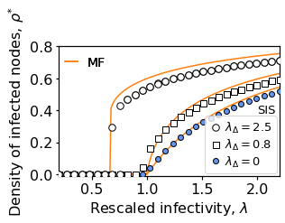

17. Simplagion Model#
import networkx as nx
import numpy as np
from scipy import random
import copy
import random
from collections import OrderedDict
import pickle
import itertools
from multiprocessing import Pool
from utils_simplagion_on_RSC import *
from tqdm.notebook import tqdm
import matplotlib.pyplot as plt
%matplotlib inline
17.1. Single simulation#
it_num = 1
N = 2000
k1 = 20
k2 = 6
p1, p2 = get_p1_and_p2(k1,k2,N)
lambda1s = np.linspace(0.2,2.2,30)
lambdaD_target = 2.5
I_percentage, t_max, mu = 1, 1000, 0.05
args = [it_num, N, p1, p2, lambda1s, lambdaD_target, I_percentage, t_max, mu]
rhos, real_k, real_kD = run_one_simulation(args)
It 1 initialized
It 1, created SC with k1=19.7 and k2=5.9
It 1, simulation has finished
plt.plot(lambda1s, rhos, 'o')
[<matplotlib.lines.Line2D at 0x12ab63d30>]
17.2. Bulk Simulation#
#Simplicial complex parameters
N = 2000
k1 = 20
k2 = 6
p1, p2 = get_p1_and_p2(k1,k2,N)
#Infection parameters
mu = 0.05
lambda1s = np.linspace(0.2,2.2,30)
lambdaD_target_list = [0,0.8,2.5,2.5]
I_percentage_list = [1,1,1,40] #initial conditions (% of infected)
#Simulation Parameters
t_max = 6000
n_simulations = 120
n_processes = 8
out_dir = 'simplagion-results/'
!mkdir ./simplagion-results/
iteration_numbers = range(n_simulations)
for lambdaD_target, I_percentage in tqdm(list(zip(lambdaD_target_list, I_percentage_list))):
print('lambdaD', lambdaD_target, 'seed', I_percentage)
################################ Preparing arguments for the parallel processing
args=[]
for it_num in range(n_simulations):
args.append([it_num, N, p1, p2, lambda1s, lambdaD_target, I_percentage, t_max, mu])
################################ Running in parallel
pool = Pool(processes=n_processes)
results = pool.map(run_one_simulation, args)
################################ Saving
filename = 'result_RSC_'+'N'+str(N)+'_k'+str(k1)+'_kD'+str(k2)+'_mu'+str(mu)+'_lD'+str(lambdaD_target)+'_seed'+str(I_percentage)+'.p'
pickle.dump(results, open(out_dir+filename, "wb" ))
lambdaD 0 seed 1
lambdaD 0.8 seed 1
It 16 initialized
not connected, but GC has order 1999 ans size 8077
It 16, created SC with k1=19.7 and k2=5.9
It 16, simulation has finished
It 17 initialized
not connected, but GC has order 1999 ans size 8059
It 17, created SC with k1=20.2 and k2=6.1
It 17, simulation has finished
It 18 initialized
It 18, created SC with k1=20.2 and k2=6.1
It 18, simulation has finished
It 19 initialized
not connected, but GC has order 1998 ans size 8152
It 19, created SC with k1=20.1 and k2=6.0
It 19, simulation has finished
It 32 initialized
not connected, but GC has order 1999 ans size 8074
It 32, created SC with k1=20.0 and k2=6.0
It 32, simulation has finished
It 33 initialized
not connected, but GC has order 1999 ans size 8215
It 33, created SC with k1=20.1 and k2=6.0
It 33, simulation has finished
It 34 initialized
It 34, created SC with k1=20.1 and k2=6.1
It 34, simulation has finished
It 35 initialized
It 35, created SC with k1=20.2 and k2=6.1
It 35, simulation has finished
It 64 initialized
It 64, created SC with k1=19.9 and k2=5.9
It 64, simulation has finished
It 65 initialized
It 65, created SC with k1=20.1 and k2=6.0
It 65, simulation has finished
It 66 initialized
not connected, but GC has order 1999 ans size 7971
It 66, created SC with k1=20.2 and k2=6.2
It 66, simulation has finished
It 67 initialized
not connected, but GC has order 1999 ans size 7967
It 67, created SC with k1=20.0 and k2=6.0
It 67, simulation has finished
It 96 initialized
not connected, but GC has order 1999 ans size 8066
It 96, created SC with k1=19.8 and k2=5.9
It 96, simulation has finished
It 97 initialized
It 97, created SC with k1=19.9 and k2=6.0
It 97, simulation has finished
It 98 initialized
It 98, created SC with k1=20.2 and k2=6.1
It 98, simulation has finished
It 99 initialized
It 99, created SC with k1=19.9 and k2=5.9
It 99, simulation has finished
It 0 initialized
It 0, created SC with k1=20.0 and k2=6.0
It 0, simulation has finished
It 1 initialized
It 1, created SC with k1=20.2 and k2=6.1
It 1, simulation has finished
It 2 initialized
not connected, but GC has order 1999 ans size 7928
It 2, created SC with k1=20.0 and k2=6.1
It 2, simulation has finished
It 3 initialized
not connected, but GC has order 1999 ans size 8000
It 3, created SC with k1=19.8 and k2=5.9
It 3, simulation has finished
It 44 initialized
not connected, but GC has order 1999 ans size 8247
It 44, created SC with k1=19.9 and k2=5.9
It 44, simulation has finished
It 45 initialized
not connected, but GC has order 1998 ans size 7958
It 45, created SC with k1=20.0 and k2=6.0
It 45, simulation has finished
It 46 initialized
It 46, created SC with k1=20.1 and k2=6.1
It 46, simulation has finished
It 47 initialized
It 47, created SC with k1=19.8 and k2=5.9
It 47, simulation has finished
It 72 initialized
It 72, created SC with k1=19.7 and k2=5.8
It 72, simulation has finished
It 73 initialized
not connected, but GC has order 1999 ans size 7977
It 73, created SC with k1=19.7 and k2=5.9
It 73, simulation has finished
It 74 initialized
It 74, created SC with k1=20.1 and k2=6.0
It 74, simulation has finished
It 75 initialized
not connected, but GC has order 1996 ans size 8006
It 75, created SC with k1=20.2 and k2=6.1
It 75, simulation has finished
It 100 initialized
It 100, created SC with k1=20.0 and k2=6.0
It 100, simulation has finished
It 101 initialized
not connected, but GC has order 1998 ans size 8015
It 101, created SC with k1=19.9 and k2=6.0
It 101, simulation has finished
It 102 initialized
not connected, but GC has order 1999 ans size 8003
It 102, created SC with k1=19.6 and k2=5.8
It 102, simulation has finished
It 103 initialized
It 103, created SC with k1=19.6 and k2=5.9
It 103, simulation has finished
It 4 initialized
not connected, but GC has order 1999 ans size 8103
It 4, created SC with k1=20.2 and k2=6.1
It 4, simulation has finished
It 5 initialized
It 5, created SC with k1=19.7 and k2=6.0
It 5, simulation has finished
It 6 initialized
not connected, but GC has order 1997 ans size 8041
It 6, created SC with k1=19.5 and k2=5.8
It 6, simulation has finished
It 7 initialized
not connected, but GC has order 1999 ans size 8089
It 7, created SC with k1=20.0 and k2=6.0
It 7, simulation has finished
It 36 initialized
not connected, but GC has order 1999 ans size 8120
It 36, created SC with k1=20.0 and k2=6.0
It 36, simulation has finished
It 37 initialized
not connected, but GC has order 1999 ans size 7919
It 37, created SC with k1=20.0 and k2=6.1
It 37, simulation has finished
It 38 initialized
not connected, but GC has order 1999 ans size 8110
It 38, created SC with k1=20.2 and k2=6.1
It 38, simulation has finished
It 39 initialized
not connected, but GC has order 1998 ans size 7988
It 39, created SC with k1=20.6 and k2=6.4
It 39, simulation has finished
It 68 initialized
It 68, created SC with k1=19.9 and k2=6.1
It 68, simulation has finished
It 69 initialized
It 69, created SC with k1=20.4 and k2=6.2
It 69, simulation has finished
It 70 initialized
It 70, created SC with k1=20.0 and k2=6.1
It 70, simulation has finished
It 71 initialized
not connected, but GC has order 1998 ans size 8143
It 71, created SC with k1=19.7 and k2=5.8
It 71, simulation has finished
It 104 initialized
It 104, created SC with k1=20.1 and k2=6.1
It 104, simulation has finished
It 105 initialized
not connected, but GC has order 1999 ans size 8151
It 105, created SC with k1=20.2 and k2=6.1
It 105, simulation has finished
It 106 initialized
It 106, created SC with k1=19.8 and k2=5.9
It 106, simulation has finished
It 107 initialized
not connected, but GC has order 1999 ans size 7990
It 107, created SC with k1=19.7 and k2=5.9
It 107, simulation has finished
It 24 initialized
not connected, but GC has order 1999 ans size 8047
It 24, created SC with k1=20.2 and k2=6.1
It 24, simulation has finished
It 25 initialized
It 25, created SC with k1=20.0 and k2=6.1
It 25, simulation has finished
It 26 initialized
It 26, created SC with k1=20.0 and k2=6.0
It 26, simulation has finished
It 27 initialized
not connected, but GC has order 1998 ans size 7973
It 27, created SC with k1=19.7 and k2=5.9
It 27, simulation has finished
It 60 initialized
It 60, created SC with k1=20.0 and k2=5.9
It 60, simulation has finished
It 61 initialized
It 61, created SC with k1=20.7 and k2=6.3
It 61, simulation has finished
It 62 initialized
not connected, but GC has order 1999 ans size 8109
It 62, created SC with k1=19.9 and k2=5.9
It 62, simulation has finished
It 63 initialized
not connected, but GC has order 1999 ans size 7921
It 63, created SC with k1=19.8 and k2=6.0
It 63, simulation has finished
It 92 initialized
not connected, but GC has order 1999 ans size 7986
It 92, created SC with k1=20.0 and k2=6.0
It 92, simulation has finished
It 93 initialized
It 93, created SC with k1=19.9 and k2=5.9
It 93, simulation has finished
It 94 initialized
It 94, created SC with k1=20.0 and k2=5.9
It 94, simulation has finished
It 95 initialized
It 95, created SC with k1=20.0 and k2=5.9
It 95, simulation has finished
It 20 initialized
It 20, created SC with k1=19.7 and k2=6.0
It 20, simulation has finished
It 21 initialized
It 21, created SC with k1=20.0 and k2=6.0
It 21, simulation has finished
It 22 initialized
not connected, but GC has order 1999 ans size 7970
It 22, created SC with k1=20.0 and k2=6.1
It 22, simulation has finished
It 23 initialized
It 23, created SC with k1=19.7 and k2=6.0
It 23, simulation has finished
It 40 initialized
not connected, but GC has order 1998 ans size 8038
It 40, created SC with k1=19.9 and k2=5.9
It 40, simulation has finished
It 41 initialized
It 41, created SC with k1=20.1 and k2=6.0
It 41, simulation has finished
It 42 initialized
It 42, created SC with k1=19.8 and k2=5.9
It 42, simulation has finished
It 43 initialized
It 43, created SC with k1=20.0 and k2=6.1
It 43, simulation has finished
It 80 initialized
not connected, but GC has order 1999 ans size 8065
It 80, created SC with k1=19.9 and k2=6.0
It 80, simulation has finished
It 81 initialized
It 81, created SC with k1=20.1 and k2=6.0
It 81, simulation has finished
It 82 initialized
It 82, created SC with k1=20.6 and k2=6.2
It 82, simulation has finished
It 83 initialized
It 83, created SC with k1=20.1 and k2=6.0
It 83, simulation has finished
It 112 initialized
It 112, created SC with k1=20.1 and k2=6.0
It 112, simulation has finished
It 113 initialized
not connected, but GC has order 1998 ans size 8029
It 113, created SC with k1=20.0 and k2=6.0
It 113, simulation has finished
It 114 initialized
not connected, but GC has order 1998 ans size 7970
It 114, created SC with k1=19.8 and k2=5.9
It 114, simulation has finished
It 115 initialized
not connected, but GC has order 1999 ans size 8075
It 115, created SC with k1=19.9 and k2=6.0
It 115, simulation has finished
It 28 initialized
It 28, created SC with k1=20.0 and k2=6.1
It 28, simulation has finished
It 29 initialized
It 29, created SC with k1=19.7 and k2=5.9
It 29, simulation has finished
It 30 initialized
It 30, created SC with k1=19.8 and k2=6.0
It 30, simulation has finished
It 31 initialized
It 31, created SC with k1=19.8 and k2=5.9
It 31, simulation has finished
It 48 initialized
It 48, created SC with k1=19.8 and k2=6.0
It 48, simulation has finished
It 49 initialized
It 49, created SC with k1=19.8 and k2=5.9
It 49, simulation has finished
It 50 initialized
It 50, created SC with k1=20.0 and k2=6.0
It 50, simulation has finished
It 51 initialized
It 51, created SC with k1=20.0 and k2=6.1
It 51, simulation has finished
It 84 initialized
It 84, created SC with k1=20.2 and k2=6.1
It 84, simulation has finished
It 85 initialized
not connected, but GC has order 1998 ans size 7897
It 85, created SC with k1=19.8 and k2=6.0
It 85, simulation has finished
It 86 initialized
not connected, but GC has order 1997 ans size 7996
It 86, created SC with k1=19.9 and k2=6.0
It 86, simulation has finished
It 87 initialized
It 87, created SC with k1=19.5 and k2=5.9
It 87, simulation has finished
It 108 initialized
It 108, created SC with k1=19.9 and k2=6.0
It 108, simulation has finished
It 109 initialized
not connected, but GC has order 1999 ans size 8022
It 109, created SC with k1=19.9 and k2=6.0
It 109, simulation has finished
It 110 initialized
It 110, created SC with k1=19.9 and k2=6.0
It 110, simulation has finished
It 111 initialized
not connected, but GC has order 1998 ans size 8051
It 111, created SC with k1=20.1 and k2=6.0
It 111, simulation has finished
It 8 initialized
not connected, but GC has order 1999 ans size 8017
It 8, created SC with k1=19.9 and k2=6.0
It 8, simulation has finished
It 9 initialized
not connected, but GC has order 1998 ans size 7958
It 9, created SC with k1=19.9 and k2=6.0
It 9, simulation has finished
It 10 initialized
not connected, but GC has order 1999 ans size 8111
It 10, created SC with k1=20.2 and k2=6.1
It 10, simulation has finished
It 11 initialized
not connected, but GC has order 1998 ans size 7917
It 11, created SC with k1=19.8 and k2=6.0
It 11, simulation has finished
It 52 initialized
It 52, created SC with k1=19.8 and k2=6.0
It 52, simulation has finished
It 53 initialized
It 53, created SC with k1=20.4 and k2=6.2
It 53, simulation has finished
It 54 initialized
It 54, created SC with k1=19.8 and k2=6.0
It 54, simulation has finished
It 55 initialized
It 55, created SC with k1=20.2 and k2=6.1
It 55, simulation has finished
It 76 initialized
It 76, created SC with k1=19.7 and k2=5.9
It 76, simulation has finished
It 77 initialized
not connected, but GC has order 1998 ans size 8026
It 77, created SC with k1=19.8 and k2=5.9
It 77, simulation has finished
It 78 initialized
not connected, but GC has order 1999 ans size 7994
It 78, created SC with k1=19.9 and k2=6.0
It 78, simulation has finished
It 79 initialized
It 79, created SC with k1=20.1 and k2=6.1
It 79, simulation has finished
It 116 initialized
not connected, but GC has order 1998 ans size 7929
It 116, created SC with k1=19.7 and k2=5.9
It 116, simulation has finished
It 117 initialized
not connected, but GC has order 1999 ans size 8273
It 117, created SC with k1=20.1 and k2=6.0
It 117, simulation has finished
It 118 initialized
It 118, created SC with k1=19.9 and k2=6.0
It 118, simulation has finished
It 119 initialized
It 119, created SC with k1=20.0 and k2=6.0
It 119, simulation has finished
It 12 initialized
It 12, created SC with k1=20.2 and k2=6.1
It 12, simulation has finished
It 13 initialized
It 13, created SC with k1=19.7 and k2=5.9
It 13, simulation has finished
It 14 initialized
not connected, but GC has order 1999 ans size 7999
It 14, created SC with k1=19.6 and k2=5.8
It 14, simulation has finished
It 15 initialized
It 15, created SC with k1=19.9 and k2=5.9
It 15, simulation has finished
It 56 initialized
not connected, but GC has order 1998 ans size 8111
It 56, created SC with k1=19.9 and k2=5.9
It 56, simulation has finished
It 57 initialized
not connected, but GC has order 1997 ans size 8030
It 57, created SC with k1=19.6 and k2=5.8
It 57, simulation has finished
It 58 initialized
not connected, but GC has order 1999 ans size 8136
It 58, created SC with k1=20.1 and k2=6.0
It 58, simulation has finished
It 59 initialized
It 59, created SC with k1=19.8 and k2=5.9
It 59, simulation has finished
It 88 initialized
not connected, but GC has order 1999 ans size 8065
It 88, created SC with k1=20.2 and k2=6.1
It 88, simulation has finished
It 89 initialized
not connected, but GC has order 1999 ans size 8004
It 89, created SC with k1=20.1 and k2=6.1
It 89, simulation has finished
It 90 initialized
It 90, created SC with k1=20.3 and k2=6.1
It 90, simulation has finished
It 91 initialized
not connected, but GC has order 1998 ans size 8091
It 91, created SC with k1=19.9 and k2=6.0
It 91, simulation has finished
lambdaD 2.5 seed 1
It 12 initialized
not connected, but GC has order 1997 ans size 8132
It 12, created SC with k1=20.0 and k2=6.0
It 12, simulation has finished
It 13 initialized
not connected, but GC has order 1998 ans size 8021
It 13, created SC with k1=20.0 and k2=6.0
It 13, simulation has finished
It 14 initialized
It 14, created SC with k1=20.1 and k2=6.0
It 14, simulation has finished
It 15 initialized
It 15, created SC with k1=20.1 and k2=6.1
It 15, simulation has finished
It 60 initialized
not connected, but GC has order 1999 ans size 7977
It 60, created SC with k1=19.8 and k2=6.0
It 60, simulation has finished
It 61 initialized
It 61, created SC with k1=20.0 and k2=6.0
It 61, simulation has finished
It 62 initialized
It 62, created SC with k1=20.0 and k2=5.9
It 62, simulation has finished
It 63 initialized
not connected, but GC has order 1999 ans size 8037
It 63, created SC with k1=20.1 and k2=6.1
It 63, simulation has finished
It 92 initialized
It 92, created SC with k1=20.1 and k2=6.1
It 92, simulation has finished
It 93 initialized
not connected, but GC has order 1999 ans size 8009
It 93, created SC with k1=19.9 and k2=6.0
It 93, simulation has finished
It 94 initialized
not connected, but GC has order 1999 ans size 8093
It 94, created SC with k1=20.1 and k2=6.1
It 94, simulation has finished
It 95 initialized
It 95, created SC with k1=20.5 and k2=6.2
It 95, simulation has finished
It 0 initialized
It 0, created SC with k1=19.9 and k2=6.0
It 0, simulation has finished
It 1 initialized
not connected, but GC has order 1999 ans size 7928
It 1, created SC with k1=19.6 and k2=5.9
It 1, simulation has finished
It 2 initialized
It 2, created SC with k1=19.7 and k2=6.0
It 2, simulation has finished
It 3 initialized
It 3, created SC with k1=20.2 and k2=6.2
It 3, simulation has finished
It 56 initialized
not connected, but GC has order 1999 ans size 8108
It 56, created SC with k1=19.9 and k2=5.9
It 56, simulation has finished
It 57 initialized
It 57, created SC with k1=20.0 and k2=6.0
It 57, simulation has finished
It 58 initialized
not connected, but GC has order 1998 ans size 7920
It 58, created SC with k1=20.0 and k2=6.1
It 58, simulation has finished
It 59 initialized
It 59, created SC with k1=20.5 and k2=6.3
It 59, simulation has finished
It 88 initialized
not connected, but GC has order 1999 ans size 8053
It 88, created SC with k1=19.6 and k2=5.8
It 88, simulation has finished
It 89 initialized
not connected, but GC has order 1999 ans size 8126
It 89, created SC with k1=20.1 and k2=6.0
It 89, simulation has finished
It 90 initialized
not connected, but GC has order 1998 ans size 8099
It 90, created SC with k1=20.0 and k2=6.0
It 90, simulation has finished
It 91 initialized
It 91, created SC with k1=20.4 and k2=6.2
It 91, simulation has finished
It 24 initialized
not connected, but GC has order 1998 ans size 7951
It 24, created SC with k1=20.0 and k2=6.1
It 24, simulation has finished
It 25 initialized
It 25, created SC with k1=20.5 and k2=6.2
It 25, simulation has finished
It 26 initialized
It 26, created SC with k1=20.2 and k2=6.1
It 26, simulation has finished
It 27 initialized
not connected, but GC has order 1999 ans size 8000
It 27, created SC with k1=19.7 and k2=5.9
It 27, simulation has finished
It 36 initialized
not connected, but GC has order 1999 ans size 8150
It 36, created SC with k1=19.9 and k2=5.9
It 36, simulation has finished
It 37 initialized
not connected, but GC has order 1999 ans size 7995
It 37, created SC with k1=19.6 and k2=5.8
It 37, simulation has finished
It 38 initialized
not connected, but GC has order 1999 ans size 8100
It 38, created SC with k1=19.8 and k2=5.9
It 38, simulation has finished
It 39 initialized
not connected, but GC has order 1999 ans size 7964
It 39, created SC with k1=20.0 and k2=6.0
It 39, simulation has finished
It 68 initialized
not connected, but GC has order 1999 ans size 8138
It 68, created SC with k1=20.0 and k2=6.0
It 68, simulation has finished
It 69 initialized
It 69, created SC with k1=20.0 and k2=6.0
It 69, simulation has finished
It 70 initialized
not connected, but GC has order 1999 ans size 8102
It 70, created SC with k1=20.0 and k2=6.0
It 70, simulation has finished
It 71 initialized
It 71, created SC with k1=19.9 and k2=6.0
It 71, simulation has finished
It 104 initialized
It 104, created SC with k1=19.9 and k2=6.0
It 104, simulation has finished
It 105 initialized
It 105, created SC with k1=19.8 and k2=6.0
It 105, simulation has finished
It 106 initialized
not connected, but GC has order 1999 ans size 8094
It 106, created SC with k1=20.0 and k2=6.0
It 106, simulation has finished
It 107 initialized
It 107, created SC with k1=19.4 and k2=5.7
It 107, simulation has finished
It 28 initialized
not connected, but GC has order 1999 ans size 8022
It 28, created SC with k1=19.7 and k2=5.9
It 28, simulation has finished
It 29 initialized
not connected, but GC has order 1998 ans size 8008
It 29, created SC with k1=19.7 and k2=5.9
It 29, simulation has finished
It 30 initialized
It 30, created SC with k1=19.9 and k2=5.9
It 30, simulation has finished
It 31 initialized
not connected, but GC has order 1998 ans size 7913
It 31, created SC with k1=19.6 and k2=5.9
It 31, simulation has finished
It 32 initialized
not connected, but GC has order 1999 ans size 8143
It 32, created SC with k1=19.8 and k2=5.9
It 32, simulation has finished
It 33 initialized
not connected, but GC has order 1999 ans size 7930
It 33, created SC with k1=20.0 and k2=6.1
It 33, simulation has finished
It 34 initialized
It 34, created SC with k1=20.0 and k2=6.0
It 34, simulation has finished
It 35 initialized
It 35, created SC with k1=19.7 and k2=5.8
It 35, simulation has finished
It 64 initialized
not connected, but GC has order 1997 ans size 8035
It 64, created SC with k1=19.9 and k2=5.9
It 64, simulation has finished
It 65 initialized
not connected, but GC has order 1999 ans size 7988
It 65, created SC with k1=19.9 and k2=6.0
It 65, simulation has finished
It 66 initialized
not connected, but GC has order 1999 ans size 8038
It 66, created SC with k1=19.8 and k2=5.9
It 66, simulation has finished
It 67 initialized
It 67, created SC with k1=19.6 and k2=5.8
It 67, simulation has finished
It 96 initialized
not connected, but GC has order 1999 ans size 8069
It 96, created SC with k1=19.8 and k2=5.9
It 96, simulation has finished
It 97 initialized
It 97, created SC with k1=19.9 and k2=5.9
It 97, simulation has finished
It 98 initialized
not connected, but GC has order 1999 ans size 8073
It 98, created SC with k1=20.1 and k2=6.1
It 98, simulation has finished
It 99 initialized
not connected, but GC has order 1999 ans size 8103
It 99, created SC with k1=20.1 and k2=6.1
It 99, simulation has finished
It 8 initialized
It 8, created SC with k1=19.9 and k2=6.0
It 8, simulation has finished
It 9 initialized
It 9, created SC with k1=19.7 and k2=5.9
It 9, simulation has finished
It 10 initialized
It 10, created SC with k1=19.6 and k2=5.9
It 10, simulation has finished
It 11 initialized
It 11, created SC with k1=19.9 and k2=6.0
It 11, simulation has finished
It 44 initialized
It 44, created SC with k1=19.8 and k2=5.9
It 44, simulation has finished
It 45 initialized
not connected, but GC has order 1997 ans size 8054
It 45, created SC with k1=20.0 and k2=6.0
It 45, simulation has finished
It 46 initialized
It 46, created SC with k1=19.7 and k2=5.9
It 46, simulation has finished
It 47 initialized
It 47, created SC with k1=20.2 and k2=6.1
It 47, simulation has finished
It 72 initialized
not connected, but GC has order 1999 ans size 8044
It 72, created SC with k1=20.2 and k2=6.1
It 72, simulation has finished
It 73 initialized
It 73, created SC with k1=20.1 and k2=6.1
It 73, simulation has finished
It 74 initialized
not connected, but GC has order 1999 ans size 8061
It 74, created SC with k1=19.9 and k2=6.0
It 74, simulation has finished
It 75 initialized
It 75, created SC with k1=19.7 and k2=6.0
It 75, simulation has finished
It 100 initialized
It 100, created SC with k1=19.9 and k2=6.0
It 100, simulation has finished
It 101 initialized
It 101, created SC with k1=19.9 and k2=6.0
It 101, simulation has finished
It 102 initialized
not connected, but GC has order 1999 ans size 7948
It 102, created SC with k1=19.8 and k2=5.9
It 102, simulation has finished
It 103 initialized
not connected, but GC has order 1999 ans size 8100
It 103, created SC with k1=19.8 and k2=5.9
It 103, simulation has finished
It 16 initialized
It 16, created SC with k1=20.0 and k2=6.0
It 16, simulation has finished
It 17 initialized
It 17, created SC with k1=20.1 and k2=6.1
It 17, simulation has finished
It 18 initialized
not connected, but GC has order 1998 ans size 8069
It 18, created SC with k1=20.0 and k2=6.0
It 18, simulation has finished
It 19 initialized
not connected, but GC has order 1999 ans size 8042
It 19, created SC with k1=20.0 and k2=6.0
It 19, simulation has finished
It 48 initialized
not connected, but GC has order 1999 ans size 8038
It 48, created SC with k1=20.1 and k2=6.1
It 48, simulation has finished
It 49 initialized
It 49, created SC with k1=19.9 and k2=6.0
It 49, simulation has finished
It 50 initialized
not connected, but GC has order 1998 ans size 7951
It 50, created SC with k1=19.8 and k2=6.0
It 50, simulation has finished
It 51 initialized
It 51, created SC with k1=20.0 and k2=6.0
It 51, simulation has finished
It 80 initialized
not connected, but GC has order 1999 ans size 7927
It 80, created SC with k1=20.4 and k2=6.3
It 80, simulation has finished
It 81 initialized
It 81, created SC with k1=19.9 and k2=5.9
It 81, simulation has finished
It 82 initialized
not connected, but GC has order 1998 ans size 8068
It 82, created SC with k1=19.7 and k2=5.8
It 82, simulation has finished
It 83 initialized
not connected, but GC has order 1999 ans size 7919
It 83, created SC with k1=20.0 and k2=6.1
It 83, simulation has finished
It 108 initialized
not connected, but GC has order 1999 ans size 7941
It 108, created SC with k1=20.0 and k2=6.0
It 108, simulation has finished
It 109 initialized
not connected, but GC has order 1999 ans size 7930
It 109, created SC with k1=20.1 and k2=6.1
It 109, simulation has finished
It 110 initialized
It 110, created SC with k1=20.1 and k2=6.1
It 110, simulation has finished
It 111 initialized
It 111, created SC with k1=19.8 and k2=5.9
It 111, simulation has finished
It 20 initialized
It 20, created SC with k1=20.2 and k2=6.1
It 20, simulation has finished
It 21 initialized
not connected, but GC has order 1998 ans size 8007
It 21, created SC with k1=19.9 and k2=6.0
It 21, simulation has finished
It 22 initialized
It 22, created SC with k1=20.2 and k2=6.1
It 22, simulation has finished
It 23 initialized
not connected, but GC has order 1998 ans size 8026
It 23, created SC with k1=19.8 and k2=5.9
It 23, simulation has finished
It 52 initialized
not connected, but GC has order 1997 ans size 8015
It 52, created SC with k1=19.4 and k2=5.7
It 52, simulation has finished
It 53 initialized
not connected, but GC has order 1999 ans size 8029
It 53, created SC with k1=19.5 and k2=5.8
It 53, simulation has finished
It 54 initialized
not connected, but GC has order 1999 ans size 7935
It 54, created SC with k1=19.9 and k2=6.0
It 54, simulation has finished
It 55 initialized
It 55, created SC with k1=20.0 and k2=6.1
It 55, simulation has finished
It 76 initialized
It 76, created SC with k1=20.0 and k2=6.1
It 76, simulation has finished
It 77 initialized
It 77, created SC with k1=20.0 and k2=6.0
It 77, simulation has finished
It 78 initialized
It 78, created SC with k1=20.4 and k2=6.2
It 78, simulation has finished
It 79 initialized
It 79, created SC with k1=19.9 and k2=6.0
It 79, simulation has finished
It 112 initialized
It 112, created SC with k1=19.9 and k2=6.0
It 112, simulation has finished
It 113 initialized
It 113, created SC with k1=20.2 and k2=6.1
It 113, simulation has finished
It 114 initialized
not connected, but GC has order 1997 ans size 7905
It 114, created SC with k1=20.0 and k2=6.1
It 114, simulation has finished
It 115 initialized
not connected, but GC has order 1999 ans size 7988
It 115, created SC with k1=20.0 and k2=6.1
It 115, simulation has finished
It 4 initialized
It 4, created SC with k1=20.0 and k2=6.1
It 4, simulation has finished
It 5 initialized
not connected, but GC has order 1999 ans size 8106
It 5, created SC with k1=20.0 and k2=6.0
It 5, simulation has finished
It 6 initialized
not connected, but GC has order 1997 ans size 7943
It 6, created SC with k1=19.6 and k2=5.9
It 6, simulation has finished
It 7 initialized
not connected, but GC has order 1999 ans size 7947
It 7, created SC with k1=19.5 and k2=5.8
It 7, simulation has finished
It 40 initialized
It 40, created SC with k1=20.0 and k2=6.0
It 40, simulation has finished
It 41 initialized
not connected, but GC has order 1999 ans size 8085
It 41, created SC with k1=20.0 and k2=6.0
It 41, simulation has finished
It 42 initialized
It 42, created SC with k1=20.0 and k2=6.0
It 42, simulation has finished
It 43 initialized
not connected, but GC has order 1997 ans size 8164
It 43, created SC with k1=20.1 and k2=6.0
It 43, simulation has finished
It 84 initialized
not connected, but GC has order 1999 ans size 8236
It 84, created SC with k1=20.1 and k2=6.0
It 84, simulation has finished
It 85 initialized
It 85, created SC with k1=19.8 and k2=5.9
It 85, simulation has finished
It 86 initialized
not connected, but GC has order 1999 ans size 8084
It 86, created SC with k1=20.1 and k2=6.1
It 86, simulation has finished
It 87 initialized
not connected, but GC has order 1999 ans size 7883
It 87, created SC with k1=19.7 and k2=6.0
It 87, simulation has finished
It 116 initialized
It 116, created SC with k1=19.9 and k2=5.9
It 116, simulation has finished
It 117 initialized
It 117, created SC with k1=20.1 and k2=6.0
It 117, simulation has finished
It 118 initialized
It 118, created SC with k1=20.3 and k2=6.1
It 118, simulation has finished
It 119 initialized
It 119, created SC with k1=20.1 and k2=6.1
It 119, simulation has finished
lambdaD 2.5 seed 40
It 24 initialized
It 24, created SC with k1=20.4 and k2=6.1
It 24, simulation has finished
It 25 initialized
not connected, but GC has order 1999 ans size 8049
It 25, created SC with k1=19.7 and k2=5.9
It 25, simulation has finished
It 26 initialized
It 26, created SC with k1=20.1 and k2=6.0
It 26, simulation has finished
It 27 initialized
It 27, created SC with k1=20.0 and k2=6.0
It 27, simulation has finished
It 56 initialized
not connected, but GC has order 1999 ans size 8006
It 56, created SC with k1=19.9 and k2=6.0
It 56, simulation has finished
It 57 initialized
It 57, created SC with k1=20.1 and k2=6.1
It 57, simulation has finished
It 58 initialized
It 58, created SC with k1=19.9 and k2=5.9
It 58, simulation has finished
It 59 initialized
not connected, but GC has order 1999 ans size 7872
It 59, created SC with k1=19.7 and k2=6.0
It 59, simulation has finished
It 84 initialized
not connected, but GC has order 1999 ans size 8128
It 84, created SC with k1=19.9 and k2=5.9
It 84, simulation has finished
It 85 initialized
not connected, but GC has order 1999 ans size 8045
It 85, created SC with k1=20.2 and k2=6.1
It 85, simulation has finished
It 86 initialized
not connected, but GC has order 1999 ans size 8005
It 86, created SC with k1=19.9 and k2=6.0
It 86, simulation has finished
It 87 initialized
It 87, created SC with k1=20.1 and k2=6.1
It 87, simulation has finished
It 28 initialized
It 28, created SC with k1=20.1 and k2=6.1
It 28, simulation has finished
It 29 initialized
It 29, created SC with k1=19.8 and k2=6.1
It 29, simulation has finished
It 30 initialized
It 30, created SC with k1=20.2 and k2=6.0
It 30, simulation has finished
It 31 initialized
not connected, but GC has order 1998 ans size 8011
It 31, created SC with k1=19.8 and k2=5.9
It 31, simulation has finished
It 60 initialized
not connected, but GC has order 1999 ans size 8013
It 60, created SC with k1=20.2 and k2=6.1
It 60, simulation has finished
It 61 initialized
It 61, created SC with k1=20.0 and k2=6.0
It 61, simulation has finished
It 62 initialized
It 62, created SC with k1=19.9 and k2=6.0
It 62, simulation has finished
It 63 initialized
It 63, created SC with k1=19.7 and k2=5.9
It 63, simulation has finished
It 92 initialized
not connected, but GC has order 1997 ans size 8183
It 92, created SC with k1=19.9 and k2=5.9
It 92, simulation has finished
It 93 initialized
It 93, created SC with k1=20.0 and k2=6.0
It 93, simulation has finished
It 94 initialized
It 94, created SC with k1=20.2 and k2=6.1
It 94, simulation has finished
It 95 initialized
It 95, created SC with k1=20.2 and k2=6.1
It 95, simulation has finished
It 20 initialized
not connected, but GC has order 1998 ans size 8143
It 20, created SC with k1=19.9 and k2=5.9
It 20, simulation has finished
It 21 initialized
It 21, created SC with k1=19.9 and k2=6.0
It 21, simulation has finished
It 22 initialized
not connected, but GC has order 1999 ans size 7938
It 22, created SC with k1=19.6 and k2=5.8
It 22, simulation has finished
It 23 initialized
It 23, created SC with k1=19.7 and k2=5.9
It 23, simulation has finished
It 40 initialized
It 40, created SC with k1=20.1 and k2=6.1
It 40, simulation has finished
It 41 initialized
It 41, created SC with k1=20.1 and k2=6.1
It 41, simulation has finished
It 42 initialized
It 42, created SC with k1=19.6 and k2=5.8
It 42, simulation has finished
It 43 initialized
not connected, but GC has order 1997 ans size 8145
It 43, created SC with k1=20.1 and k2=6.0
It 43, simulation has finished
It 64 initialized
not connected, but GC has order 1999 ans size 8127
It 64, created SC with k1=20.0 and k2=6.0
It 64, simulation has finished
It 65 initialized
not connected, but GC has order 1999 ans size 8017
It 65, created SC with k1=20.4 and k2=6.2
It 65, simulation has finished
It 66 initialized
It 66, created SC with k1=19.9 and k2=6.0
It 66, simulation has finished
It 67 initialized
not connected, but GC has order 1999 ans size 8012
It 67, created SC with k1=19.8 and k2=6.0
It 67, simulation has finished
It 96 initialized
It 96, created SC with k1=20.0 and k2=6.0
It 96, simulation has finished
It 97 initialized
It 97, created SC with k1=19.8 and k2=6.0
It 97, simulation has finished
It 98 initialized
not connected, but GC has order 1999 ans size 8126
It 98, created SC with k1=20.1 and k2=6.0
It 98, simulation has finished
It 99 initialized
It 99, created SC with k1=20.0 and k2=6.0
It 99, simulation has finished
It 0 initialized
not connected, but GC has order 1998 ans size 8134
It 0, created SC with k1=19.5 and k2=5.7
It 0, simulation has finished
It 1 initialized
It 1, created SC with k1=19.9 and k2=6.0
It 1, simulation has finished
It 2 initialized
not connected, but GC has order 1999 ans size 8042
It 2, created SC with k1=20.0 and k2=6.0
It 2, simulation has finished
It 3 initialized
not connected, but GC has order 1999 ans size 7953
It 3, created SC with k1=19.7 and k2=5.9
It 3, simulation has finished
It 44 initialized
not connected, but GC has order 1999 ans size 8193
It 44, created SC with k1=20.0 and k2=5.9
It 44, simulation has finished
It 45 initialized
It 45, created SC with k1=20.0 and k2=6.0
It 45, simulation has finished
It 46 initialized
It 46, created SC with k1=19.9 and k2=6.0
It 46, simulation has finished
It 47 initialized
It 47, created SC with k1=20.2 and k2=6.1
It 47, simulation has finished
It 76 initialized
not connected, but GC has order 1999 ans size 7956
It 76, created SC with k1=19.7 and k2=5.9
It 76, simulation has finished
It 77 initialized
not connected, but GC has order 1999 ans size 8163
It 77, created SC with k1=20.0 and k2=6.0
It 77, simulation has finished
It 78 initialized
It 78, created SC with k1=20.1 and k2=6.1
It 78, simulation has finished
It 79 initialized
not connected, but GC has order 1999 ans size 8093
It 79, created SC with k1=19.8 and k2=5.9
It 79, simulation has finished
It 100 initialized
It 100, created SC with k1=20.3 and k2=6.1
It 100, simulation has finished
It 101 initialized
not connected, but GC has order 1999 ans size 8087
It 101, created SC with k1=20.1 and k2=6.1
It 101, simulation has finished
It 102 initialized
not connected, but GC has order 1999 ans size 7893
It 102, created SC with k1=19.8 and k2=6.0
It 102, simulation has finished
It 103 initialized
It 103, created SC with k1=19.8 and k2=5.9
It 103, simulation has finished
It 12 initialized
not connected, but GC has order 1999 ans size 8131
It 12, created SC with k1=20.1 and k2=6.0
It 12, simulation has finished
It 13 initialized
It 13, created SC with k1=19.7 and k2=5.9
It 13, simulation has finished
It 14 initialized
It 14, created SC with k1=20.1 and k2=6.1
It 14, simulation has finished
It 15 initialized
not connected, but GC has order 1999 ans size 8128
It 15, created SC with k1=20.2 and k2=6.1
It 15, simulation has finished
It 36 initialized
not connected, but GC has order 1999 ans size 8018
It 36, created SC with k1=19.7 and k2=5.9
It 36, simulation has finished
It 37 initialized
It 37, created SC with k1=19.8 and k2=5.8
It 37, simulation has finished
It 38 initialized
It 38, created SC with k1=19.6 and k2=5.9
It 38, simulation has finished
It 39 initialized
not connected, but GC has order 1998 ans size 7971
It 39, created SC with k1=19.9 and k2=6.0
It 39, simulation has finished
It 72 initialized
It 72, created SC with k1=19.9 and k2=5.9
It 72, simulation has finished
It 73 initialized
It 73, created SC with k1=19.9 and k2=6.0
It 73, simulation has finished
It 74 initialized
not connected, but GC has order 1999 ans size 8112
It 74, created SC with k1=20.5 and k2=6.2
It 74, simulation has finished
It 75 initialized
It 75, created SC with k1=20.1 and k2=6.1
It 75, simulation has finished
It 108 initialized
It 108, created SC with k1=19.8 and k2=5.9
It 108, simulation has finished
It 109 initialized
It 109, created SC with k1=19.8 and k2=5.9
It 109, simulation has finished
It 110 initialized
It 110, created SC with k1=20.2 and k2=6.1
It 110, simulation has finished
It 111 initialized
not connected, but GC has order 1999 ans size 7900
It 111, created SC with k1=20.0 and k2=6.1
It 111, simulation has finished
It 8 initialized
not connected, but GC has order 1999 ans size 8148
It 8, created SC with k1=20.1 and k2=6.0
It 8, simulation has finished
It 9 initialized
not connected, but GC has order 1998 ans size 8185
It 9, created SC with k1=20.0 and k2=5.9
It 9, simulation has finished
It 10 initialized
It 10, created SC with k1=20.0 and k2=6.0
It 10, simulation has finished
It 11 initialized
It 11, created SC with k1=20.0 and k2=6.1
It 11, simulation has finished
It 32 initialized
It 32, created SC with k1=19.9 and k2=6.0
It 32, simulation has finished
It 33 initialized
It 33, created SC with k1=19.8 and k2=5.9
It 33, simulation has finished
It 34 initialized
not connected, but GC has order 1999 ans size 8278
It 34, created SC with k1=20.1 and k2=6.0
It 34, simulation has finished
It 35 initialized
It 35, created SC with k1=20.1 and k2=6.1
It 35, simulation has finished
It 68 initialized
It 68, created SC with k1=20.2 and k2=6.1
It 68, simulation has finished
It 69 initialized
It 69, created SC with k1=20.1 and k2=6.0
It 69, simulation has finished
It 70 initialized
not connected, but GC has order 1998 ans size 8091
It 70, created SC with k1=20.1 and k2=6.0
It 70, simulation has finished
It 71 initialized
not connected, but GC has order 1999 ans size 8011
It 71, created SC with k1=19.9 and k2=6.0
It 71, simulation has finished
It 104 initialized
not connected, but GC has order 1999 ans size 8099
It 104, created SC with k1=20.1 and k2=6.0
It 104, simulation has finished
It 105 initialized
It 105, created SC with k1=20.3 and k2=6.1
It 105, simulation has finished
It 106 initialized
not connected, but GC has order 1999 ans size 8088
It 106, created SC with k1=19.9 and k2=5.9
It 106, simulation has finished
It 107 initialized
not connected, but GC has order 1999 ans size 8083
It 107, created SC with k1=20.1 and k2=6.1
It 107, simulation has finished
It 16 initialized
not connected, but GC has order 1999 ans size 8074
It 16, created SC with k1=19.5 and k2=5.8
It 16, simulation has finished
It 17 initialized
not connected, but GC has order 1999 ans size 8225
It 17, created SC with k1=20.2 and k2=6.0
It 17, simulation has finished
It 18 initialized
not connected, but GC has order 1998 ans size 8145
It 18, created SC with k1=19.9 and k2=5.9
It 18, simulation has finished
It 19 initialized
not connected, but GC has order 1999 ans size 8112
It 19, created SC with k1=19.8 and k2=5.9
It 19, simulation has finished
It 48 initialized
It 48, created SC with k1=20.3 and k2=6.2
It 48, simulation has finished
It 49 initialized
It 49, created SC with k1=20.5 and k2=6.2
It 49, simulation has finished
It 50 initialized
It 50, created SC with k1=20.1 and k2=6.1
It 50, simulation has finished
It 51 initialized
It 51, created SC with k1=19.9 and k2=6.0
It 51, simulation has finished
It 88 initialized
not connected, but GC has order 1999 ans size 8048
It 88, created SC with k1=19.9 and k2=6.0
It 88, simulation has finished
It 89 initialized
not connected, but GC has order 1999 ans size 8002
It 89, created SC with k1=20.2 and k2=6.2
It 89, simulation has finished
It 90 initialized
not connected, but GC has order 1997 ans size 7897
It 90, created SC with k1=20.1 and k2=6.1
It 90, simulation has finished
It 91 initialized
not connected, but GC has order 1999 ans size 8016
It 91, created SC with k1=20.4 and k2=6.3
It 91, simulation has finished
It 116 initialized
It 116, created SC with k1=19.6 and k2=5.9
It 116, simulation has finished
It 117 initialized
not connected, but GC has order 1999 ans size 7986
It 117, created SC with k1=20.4 and k2=6.2
It 117, simulation has finished
It 118 initialized
not connected, but GC has order 1999 ans size 8041
It 118, created SC with k1=19.8 and k2=5.9
It 118, simulation has finished
It 119 initialized
not connected, but GC has order 1998 ans size 8069
It 119, created SC with k1=19.7 and k2=5.9
It 119, simulation has finished
It 4 initialized
It 4, created SC with k1=20.2 and k2=6.1
It 4, simulation has finished
It 5 initialized
not connected, but GC has order 1997 ans size 8147
It 5, created SC with k1=20.1 and k2=6.0
It 5, simulation has finished
It 6 initialized
It 6, created SC with k1=20.4 and k2=6.2
It 6, simulation has finished
It 7 initialized
It 7, created SC with k1=20.0 and k2=6.0
It 7, simulation has finished
It 52 initialized
not connected, but GC has order 1999 ans size 8082
It 52, created SC with k1=20.1 and k2=6.1
It 52, simulation has finished
It 53 initialized
not connected, but GC has order 1999 ans size 8091
It 53, created SC with k1=19.8 and k2=5.9
It 53, simulation has finished
It 54 initialized
not connected, but GC has order 1999 ans size 8057
It 54, created SC with k1=19.9 and k2=6.0
It 54, simulation has finished
It 55 initialized
not connected, but GC has order 1998 ans size 8020
It 55, created SC with k1=19.9 and k2=6.0
It 55, simulation has finished
It 80 initialized
It 80, created SC with k1=19.8 and k2=6.0
It 80, simulation has finished
It 81 initialized
not connected, but GC has order 1999 ans size 8010
It 81, created SC with k1=20.2 and k2=6.1
It 81, simulation has finished
It 82 initialized
not connected, but GC has order 1999 ans size 8057
It 82, created SC with k1=20.0 and k2=6.0
It 82, simulation has finished
It 83 initialized
not connected, but GC has order 1999 ans size 8038
It 83, created SC with k1=19.7 and k2=5.9
It 83, simulation has finished
It 112 initialized
not connected, but GC has order 1997 ans size 8198
It 112, created SC with k1=20.4 and k2=6.1
It 112, simulation has finished
It 113 initialized
not connected, but GC has order 1999 ans size 8037
It 113, created SC with k1=19.9 and k2=6.0
It 113, simulation has finished
It 114 initialized
not connected, but GC has order 1997 ans size 7934
It 114, created SC with k1=19.9 and k2=6.0
It 114, simulation has finished
It 115 initialized
It 115, created SC with k1=19.6 and k2=5.8
It 115, simulation has finished
17.2.1. Plotting#
N = 2000
k1 = 20
k2 = 6
cut = True
lambda1s = np.linspace(0.2,2.2,30)
lambdaD_target_list = [2.5,2.5,0.8,0]
I_percentage_list = [40,1,1,1] #initial conditions (% of infected)
mu = 0.05
out_dir = 'simplagion-results/'
############################# Preparing MF
MF_x=np.linspace(0.2,2.2,200)
MF_y_dict = {}
for i, (lambdaD_target, I_percentage) in enumerate(zip(lambdaD_target_list, I_percentage_list)):
if i != 1:
filename = 'result_RSC_'+'N'+str(N)+'_k'+str(k1)+'_kD'+str(k2)+'_mu'+str(mu)+'_lD'+str(lambdaD_target)+'_seed'+str(I_percentage)+'.p'
results = pickle.load(open(out_dir+filename, "rb" ))
_, avg_k, avg_kD = parse_results(results, cut=cut)
beta2 = (mu*lambdaD_target)/k2
real_lambdaD = 1.*(beta2*avg_kD)/mu
#fixing for lD=0:
if real_lambdaD==0: real_lambdaD = 0.0000001
MF_y = list(map(lambda xx: get_rho_MF(xx, real_lambdaD), MF_x))
MF_y_dict[i] = MF_y
/Users/lordgrilo/Dropbox (ISI Foundation)/Teaching/Complexity/complexity-book-repo/4-social-contagion/utils_simplagion_on_RSC.py:286: RuntimeWarning: invalid value encountered in sqrt
rho1 = (lD-l + np.sqrt((l-lD)**2 - 4.*lD*(1-l)))/(2*lD)
fig = plt.figure(figsize=(4.5,3));
plt.rcParams['xtick.major.width'] = 1.2
plt.rcParams['ytick.major.width'] = 1.2
plt.rcParams['axes.linewidth'] = 1.2
markers = ['o','o','s','o']
zorders = [8,7,6,5]
mfcs = ['white', 'white', 'white', 'cornflowerblue']
lables = [r'$\lambda_\Delta=2.5$','',r'$\lambda_\Delta=0.8$', r'$\lambda_\Delta=0$']
markersizes = [7.5,7.5,7,6]
ax = plt.subplot(111)
for i, (lambdaD_target, I_percentage) in enumerate(zip(lambdaD_target_list, I_percentage_list)):
filename = 'result_RSC_'+'N'+str(N)+'_k'+str(k1)+'_kD'+str(k2)+'_mu'+str(mu)+'_lD'+str(lambdaD_target)+'_seed'+str(I_percentage)+'.p'
results = pickle.load(open(out_dir+filename, "rb" ))
avg_rhos, avg_k, avg_kD = parse_results(results, cut=cut)
ax.plot(lambda1s, avg_rhos, markers[i], color='black', zorder=zorders[i],
mfc=mfcs[i], markersize=markersizes[i], label=lables[i])
if i != 1:
ax.plot(MF_x, MF_y_dict[i], '-', markersize=2, color=u'#ff7f0e')
ax.tick_params(axis='both', which='major', labelsize=16)
ax.set_xlabel(r'Rescaled infectivity, $\lambda$', size=16)
ax.set_ylabel(r'Density of infected nodes, $\rho^{*}$', size=16)
ax.set_xlim(0.2,2.2)
ax.set_ylim(-0.01,0.8);
ax.set_yticks([0,0.2,0.4,0.6,0.8]);
lgd = ax.legend(fontsize=13, handlelength=1, handletextpad=0.3, borderaxespad=0.2,
loc='lower right', labelspacing=0.2, borderpad=0.4)
ax.add_artist(lgd)
h = plt.plot([],[],'-', color=u'#ff7f0e', markersize=2, label='MF')
lgd = plt.legend(handles=h, loc=(0.02,0.82), frameon=False, fontsize=14, handlelength=1, borderpad=0.1)
ax.add_artist(lgd)
ax.annotate('SIS', (2,0.38), fontsize=13)
plt.tight_layout()
